Showing 71 breeds
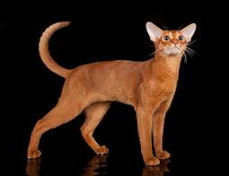
AncientOne of the oldest known breeds with a distinctive ticked tabby coat. Named for Abyssinia, though genetic research points to Southeast Asia. Highly athletic and endlessly inquisitive.
 Ancient
Ancient
The only naturally spotted domestic cat. Ancient Egyptian art depicts nearly identical cats. Capable of speeds up to 30 mph — the fastest domestic cat breed.
 Ancient
Ancient
A national treasure in Turkey, bred at the Ankara Zoo for centuries. Their silky, single-layer coat flows with every graceful movement. One of the oldest natural long-haired breeds.
 Ancient
Ancient
Nicknamed 'the swimming cat' for their love of water. Developed naturally near Lake Van in Turkey. Their water-resistant cashmere-like coat and striking color pattern are iconic.
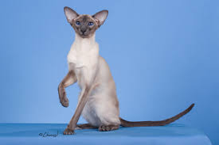
AncientOne of Asia's first recognized breeds, depicted in Thai manuscripts from the 14th century. Famous for striking blue eyes, color-point markings, and extremely chatty personalities.
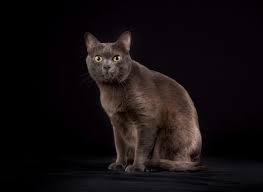
AncientConsidered a symbol of good luck in Thailand, gifted to brides for centuries. One of the world's oldest natural breeds with a silver-blue single coat and heart-shaped face.
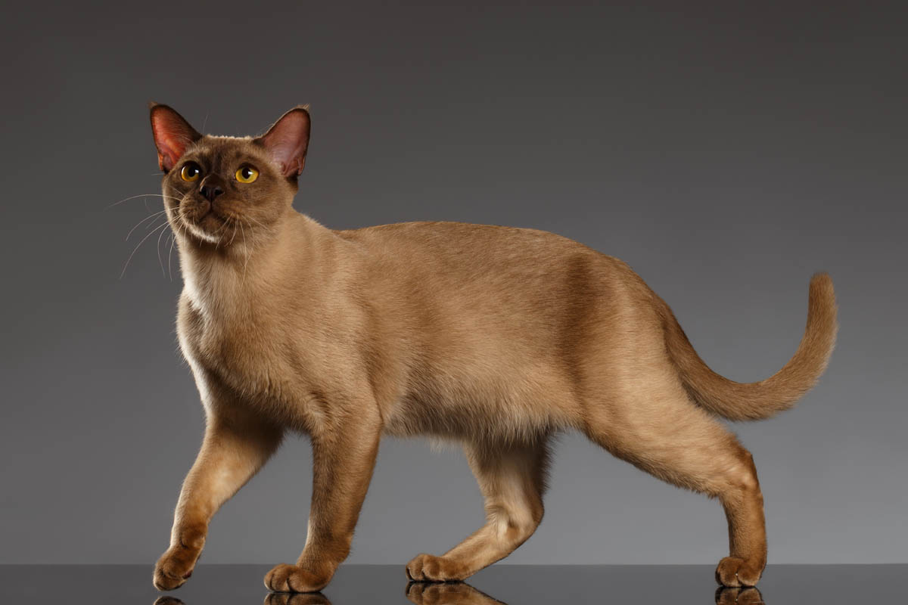
AncientDescended from a single cat named Wong Mau brought to the US in 1930. Legend holds the breed was kept in Burmese temples as sacred cats of the gods.
 Ancient
Ancient
Depicted in Japanese art for over 1,000 years. The iconic Maneki-neko (beckoning cat) is based on this breed. Their distinctive pom-pom tail is a natural mutation.
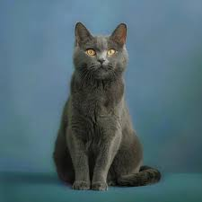
AncientPossibly bred by Carthusian monks in France, this robust blue-grey cat is known for its 'smile.' A natural breed that survived largely unchanged for centuries.
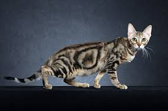
AncientOne of the rarest breeds, discovered in the Arabuko Sokoke forest of Kenya. Their modified tabby coat pattern resembles tree bark. Extremely agile tree climbers.
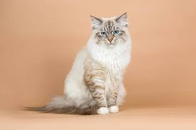
AncientRussia's national cat, referenced in fairy tales for over 1,000 years. A large, powerful forest cat that produces lower levels of the Fel d1 allergen — better for allergy sufferers.
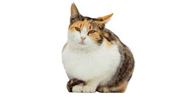
AncientOne of the few fully natural breeds, developed from cats on the Greek Cyclades islands over thousands of years. Recognized as a Greek national heritage breed.
 Ancient
Ancient
Known as 'White Gem,' this pure white Thai breed with odd-colored eyes was kept exclusively by Thai royalty for centuries and considered an omen of good fortune.
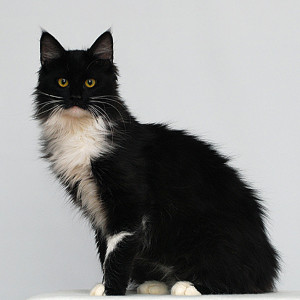
AncientPotentially the oldest domestic cat lineage, linked to a burial site in Cyprus from 7500 BC. A naturally developed breed with diverse coat types, now formally recognized.
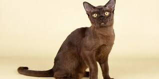
AncientAn ancient Thai breed from the same Tamra Maew manuscript as the Korat and Siamese. Their rare copper-red coat was considered auspicious. Nearly extinct until recent preservation efforts.
 Ancient
Ancient
China's only native domestic cat breed, descended directly from the Chinese Mountain Cat. Their striking brown tabby coat and muscular build reflect centuries of minimal selective breeding.
 Western
Western
America's oldest native long-haired breed. Often called 'the dog of the cat world.' Males can exceed 18 lbs, with tufted ears and a signature bushy tail.
 Western
Western
Known in Norse mythology as the fairy cat of the forest. Built for Scandinavian winters with a thick double coat. Strong climbers who always prefer the highest perch.
 Western
Western
Descended from cats brought to Britain by the Romans. The Cheshire Cat in Alice in Wonderland was inspired by this breed. Known for their dense, crisp, plush coat.
 Western
Western
A spontaneous mutation discovered in 1961 on a farm in Scotland. Their folded ears give an irresistibly owl-like appearance. Known for sitting in 'the Buddha sit' position.
 Western
Western
Believed to have originated in the port of Archangel, Russia. Their brilliant green eyes emerge through a gorgeous blue-grey double coat. Reserved with strangers, devoted to family.
 Western
Western
An ancient natural mutation from the Isle of Man resulting in a tailless cat. Their rounded rear and rabbit-like hop are distinctive. Many are 'rumpies' (fully tailless) or 'stumpies.'
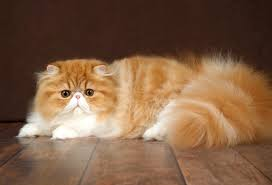
WesternOne of the most popular breeds in the world. Their luxurious flowing coat and sweet, quiet disposition made them darlings of Victorian aristocracy. A symbol of refined elegance.
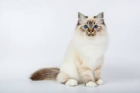
WesternThe Sacred Cat of Burma, said to have lived in Burmese temples. Distinguished by striking white gloves on all four paws and deep blue eyes. First documented in France in 1919.
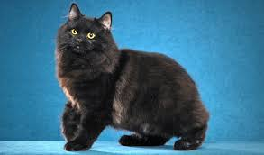
WesternThe long-haired Manx. Developed independently in Canada. Like the Manx, they're tailless or have a short stub, with a rounded, rabbit-like appearance and dog-like personality.
 Western
Western
Called 'the lazy man's Persian' for their plush, easy-maintenance coat. Developed as a short-haired alternative to the Persian, inheriting the same sweet, gentle temperament.
 Western
Western
Developed from British Shorthairs crossed with Persians. Long flowing coat over the characteristic British Shorthair build. Calm, gentle, and less demanding than many long-haired breeds.
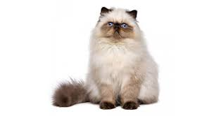
WesternA cross between Persian and Siamese, combining the Persian's body and coat with Siamese color points. Their vivid blue eyes are striking against pale body and darker face.
 Western
Western
The straight-eared version from the same Scottish Fold breeding lines. Fold-to-Fold breeding can cause skeletal issues, so Folds are crossed with Straights to maintain health.
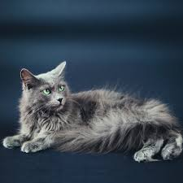
WesternNamed from the German for 'creature of the mist.' A long-haired Russian Blue variant with a shimmering blue-grey silky coat. Gentle and reserved, deeply loyal to their chosen person.
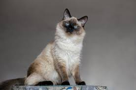
AsianA long-haired Siamese natural mutation. Named for the graceful dancers of Bali. They carry all the Siamese personality — social, vocal, loving — with a flowing, silky coat.
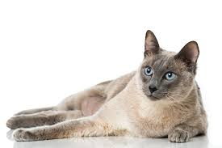
AsianA deliberate cross between Siamese and Burmese cats. Their striking aquamarine eyes and mink coat pattern are unique to the breed. Combines the best of both parent breeds.
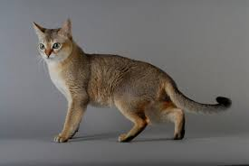
AsianThe world's smallest domestic cat breed, said to descend from 'drain cats' of Singapore. Their large eyes and ears give a perpetually kitten-like expression throughout life.
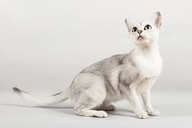
AsianAn accidental cross between a Burmese and Chinchilla Persian in 1981. Their silver-shaded coat with dark tipping gives a shimmering, luminous appearance unique to the breed.
 Asian
Asian
Arose from the same Burmilla program. Long-haired version with all the Asian group's social, playful qualities and a beautiful flowing coat also known as the Tiffanie.
 Asian
Asian
Essentially a Siamese with non-traditional point colors: red, cream, lynx, and tortie points. Shares all Siamese characteristics but with an expanded color palette.
 Asian
Asian
Available in over 300 color and pattern combinations — the most visually diverse breed — while sharing identical Siamese personality traits in a non-pointed coat.
 Asian
Asian
The long-haired version of the Oriental Shorthair. Same diverse 300+ color range and Siamese-type personality with a flowing, silky single coat.
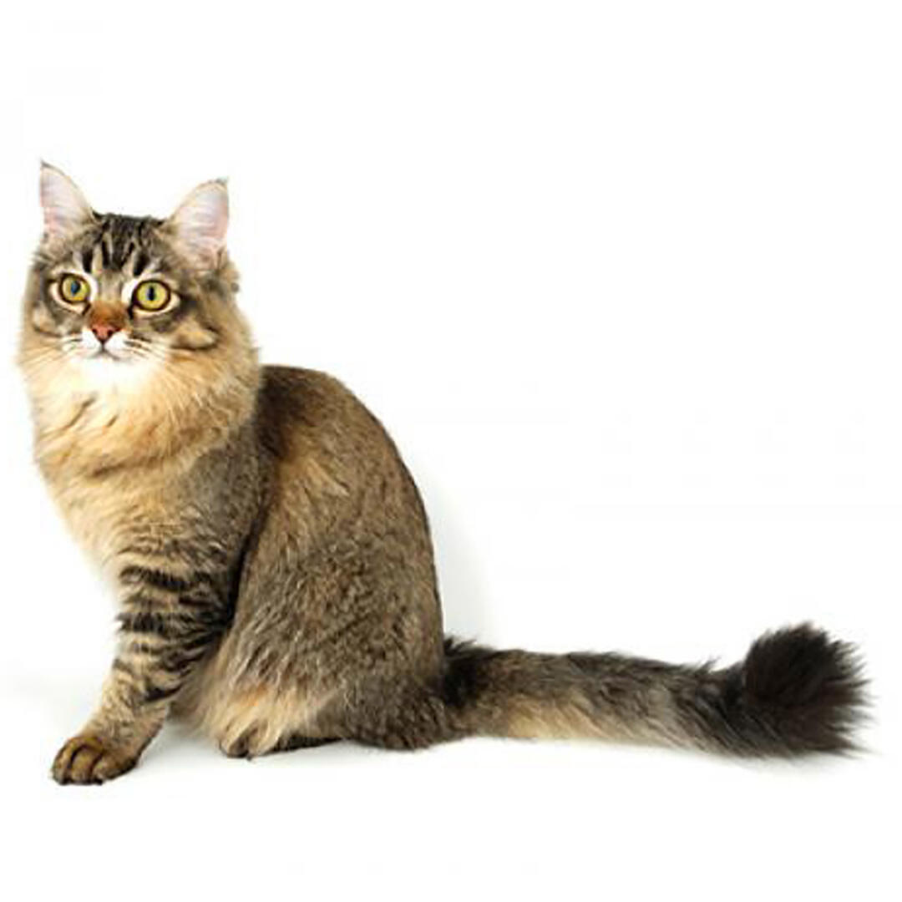
AsianThe long-haired version of the Asian group from the Burmilla program. Combines a silky flowing coat with the gentle, sociable personality that characterizes the Asian shorthair group.
 American
American
Descended from European cats brought by early settlers. Selectively bred from the best working cats, they're robust, long-lived, and easy-going with all family members.
 American
American
A natural mutation resulting in a short, bobbed tail. Developed from a wild-looking shorthaired cat found in Arizona. Known for an unusually dog-like personality and intelligence.
 American
American
A natural mutation discovered in California in 1981. Their ears curl backward in a graceful arc. A single dominant gene produces the trait in both short and long-haired varieties.
 American
American
A spontaneous mutation from a New York farm. Every hair — including eyebrows and whiskers — is crimped or bent, creating an unusual, springy, wire-like texture unlike any other breed.
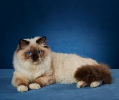
AmericanNamed for their tendency to go completely limp when picked up. Developed in California in the 1960s. One of the largest domestic cat breeds, gentle enough for apartment living.
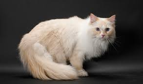
AmericanA close relative of the Ragdoll with a broader range of colors and patterns. Distinguished by large, walnut-shaped eyes and incredibly dense, rabbit-like fur.
 American
American
Discovered in Wyoming. The only rex breed derived from a random-bred cat. Their loose, curly coat is sometimes called 'the cat in sheep's clothing.' Patient and affectionate.
 American
American
A rich, warm chocolate-brown cat from Siamese and black domestic cat crosses. Named for the color of a Havana cigar. Notably uses their paws like hands to explore objects.
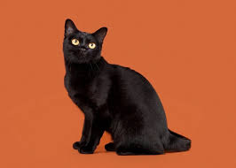
AmericanDeveloped to resemble a miniature Indian black panther. Crossed from sable Burmese and black American Shorthairs. Their jet-black coat and vivid copper eyes are immediately striking.
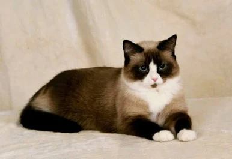
AmericanDeveloped in Philadelphia from Siamese producing kittens with white paws. Distinctive white 'snowshoe' feet, pointed markings, and bright blue eyes define the breed standard.
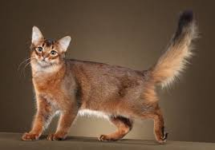
AmericanThe long-haired Abyssinian — also called 'the fox cat' for their bushy tail and large ears. Shares the Abyssinian's curiosity and athleticism with a spectacular ticked, agouti coat.
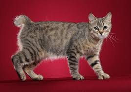
AmericanBred to resemble the coastal red bobcat of the Pacific Northwest. Many are polydactyl (extra toes). Despite the wild look, they're exceptionally gentle and dog-like in personality.
 American
American
Australia's only native cat breed, developed from Burmese, Abyssinian, and domestic shorthairs. Their distinctive misty, spotted or marbled coat pattern is unique to the breed.
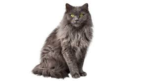
AmericanA nearly extinct breed rediscovered in the 1960s. Beautiful semi-long chocolate coat with golden eyes. Devoted and quiet — sometimes called 'the gentle giant.'
 American
American
Developed in the 1980s to protest the fur trade. Bred from various domestic and Asian breeds to resemble wild spotted cats without any wild genetics. Now very rare.
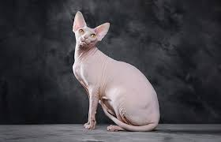
RexBorn from a natural mutation in Toronto in 1966. Despite appearances, covered in fine peach-fuzz down and feels like warm suede. The most extroverted, social cats in the world.
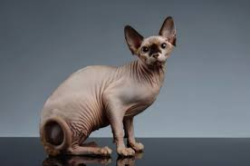
RexDiscovered in 1987 via a different hairless gene than the Sphynx. Some are born with a coat they shed completely over time. Extraordinarily wrinkled and highly social.
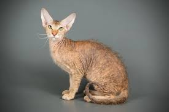
RexAn Oriental-type cat with a dominant hairless gene from the Donskoy. More elegant and svelte than other hairless breeds. Highly vocal and deeply social like their Siamese ancestors.
 Rex
Rex
Discovered in Devon, England in 1959. Their large ears, wide eyes, and short wavy coat give an otherworldly, pixie-like appearance. Known for incredible mischief and constant antics.
 Rex
Rex
The first rex mutation, discovered in Cornwall in 1950. Their coat lacks guard hairs, leaving only fine down layer — resulting in exceptionally soft, tight-curled waves. Greyhound-like build.
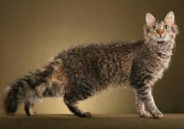
RexSpontaneous mutation on an Oregon farm in 1982. Born bald, they develop curly or wavy coats. Named for the permanent wave hairstyle popular at the time of their discovery.
 Rex
Rex
One of the earliest rex mutations, discovered in Germany before the Cornish Rex. Similar in appearance but developed independently. Gentle and people-oriented throughout.
 Rex
Rex
Developed by crossing the Donskoy (hairless) and Scottish Fold (folded ears). Their distinctive inward-folding ears on a hairless, dog-faced body is completely unique among all breeds.
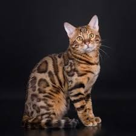
HybridBred from the Asian leopard cat crossed with domestic cats. Retains the breathtaking spotted or marbled coat of wild cats with a domestic temperament. Often described as dog-like.
 Hybrid
Hybrid
A hybrid of domestic cat and African serval. The tallest domestic cat breed, with long legs, large ears, and bold spots. Early generations can exceed 25 lbs. Extremely active and intelligent.
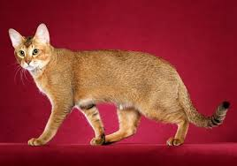
HybridA hybrid of jungle cat (Felis chaus) and domestic cats. Long-legged and athletic with a wild appearance but thoroughly domestic temperament. The name derives from Felis chaus.
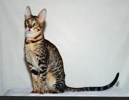
HybridDeveloped to resemble a serval without using wild blood. Crossed from Bengal and Oriental Shorthair. Striking long legs, large rounded ears, and bold spotted pattern are the hallmarks.
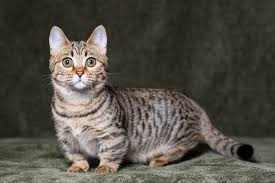
UniqueA natural genetic mutation producing shortened legs, first documented in the US in 1983, recognized in 1991. Despite short legs, they move quickly and love to play. Named after the Munchkins of Oz.
 Unique
Unique
Extraordinarily rare breed with deep blue eyes in non-pointed cats. Discovered in New Mexico in 1984. The eye-color gene is unlike any other breed's and produces vivid sapphire eyes.
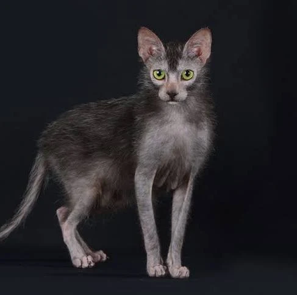
UniqueCalled the 'werewolf cat' for their partial hairlessness and roan-patterned fur. A natural mutation confirmed in 2010. They lack the undercoat and some guard hairs, creating a wolf-like appearance.
 Unique
Unique
A large natural breed from Cyprus, named for the goddess Aphrodite. One of the largest natural cat breeds, they're gentle giants with a strong hunting background and island heritage.